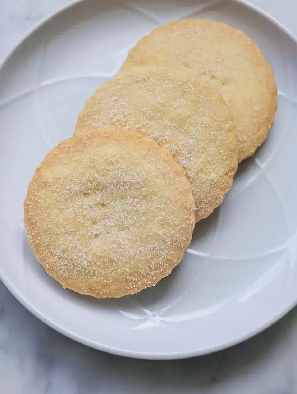

Description:
This is a compilation of several Shortbread recipes I have from British cookbooks. I have been to England three times and REAL shortbread is a favorite. It should use real butter and not be TOO sweet.
Ingredients:
- ¼ cup white sugar
- ½ cup unsalted butter
- 1 cup all-purpose flour
- ⅓ cup white rice flour
Steps:
- Preheat oven to 325 degrees F (165 degrees C).
- Line a baking sheet with greaseproof (parchment) paper. Sift the flour and rice flour into a medium mixing bowl. Add the sugar and mix.
- Cut butter into pieces and rub into the flour with your fingertips until the mixture begins to bind together. Knead into soft dough.
- Roll the dough into an 8 inch round (or for exact round, mold it in an 8 inch cake pan). Place on baking sheet. Using a fork, prick top and make tine marks along edge. Using a table knife, score top with wedge marks. (This is where it will break when cooled)
- Bake 45 minutes or until pale golden in color. Sprinkle a little superfine sugar over top and cool on baking sheet. Cut into wedges. Keeps for weeks in airtight tin.
Return to top
Back to main page